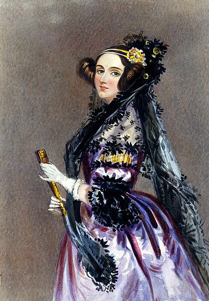

Ada Lovelace

Ada Lovelace (1815-1856) fue una matemática y escritora británica. Se le considera la primera programadora
de la
historia por su trabajo con la máquina analítica de Charles Babbege.
Logros destacados
- Desarrolló el primer algoritmo pensando para ser procesado por una máquina.
- Comprendió la capacidad de los computadores más allá de los cálculos matemáticos.
- Su trabajo sentó las bases de la informática moderna.